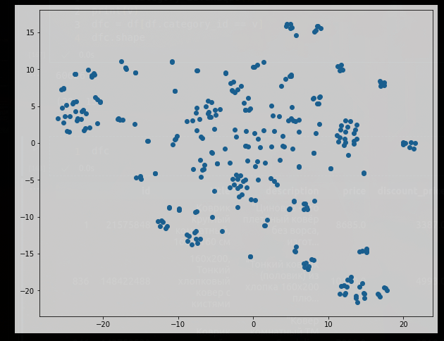
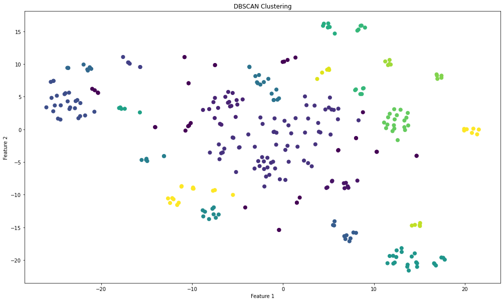

One of the common machine learning problems is clustering. This is an unsupervised task ususally performed to identify patterns and group similar data points within a dataset. For example, one might be interested in getting the segments within a number of goods. A possible approach might be extracting segments based on their names or description. There might be different tools for this task and a sentence tansformer is one of them.
The SentenceTransformer is a Python library designed to generate numerical representations (embeddings) for sentences and text passages. It utilizes pre-trained models that have been fine-tuned on a wide range of language understanding tasks, such as sentence similarity, text classification, and more. These models are capable of transforming input sentences into fixed-length vectors in a semantic space, where similar sentences have similar vector representations. The pre-trained model might be collected from [Hugging Face resource](https://huggingface.co/sentence-transformers/distiluse-base-multilingual-cased-v2).
from sentence_transformers import SentenceTransformer, util
# initiate the model
model = SentenceTransformer('sentence-transformers/distiluse-base-multilingual-cased-v2')
# transform goods' title into embeddings
embeddings = model.encode(df["nmae"].values, convert_to_tensor=True)
The next step is to apply (t-SNE)[https://scikit-learn.org/stable/modules/generated/sklearn.manifold.TSNE.html] to reduce dimensions of the embeddings.
tsne = TSNE(n_components=2, random_state=42)
x = tsne.fit_transform(embeddings)
print(x.shape)
plt.figure(figsize=(10, 8))
plt.scatter(x[:, 0], x[:, 1])
plt.show()
The result is the 2D representation of the embeddings space:
The final step is applying [DBSCAN](https://scikit-learn.org/stable/modules/generated/sklearn.cluster.DBSCAN.html) to extract clusters. One point to mention is the *eps* parameter, "the maximum distance between two samples for one to be considered as in the neighborhood of the other.". By varying this parameters you can empirically identify the number of clusters.
dbscan = DBSCAN(eps=2.3, min_samples=5)
labels = dbscan.fit_predict(x)
print(labels.shape, len(set(labels)))
df["group"] = labels
plt.figure(figsize=(17, 10))
plt.scatter(x[:, 0], x[:, 1], c=labels, cmap=plt.cm.get_cmap("viridis", np.max(labels) + 1), s=50)
plt.title("DBSCAN Clustering")
plt.xlabel("Feature 1")
plt.ylabel("Feature 2")
plt.show()
